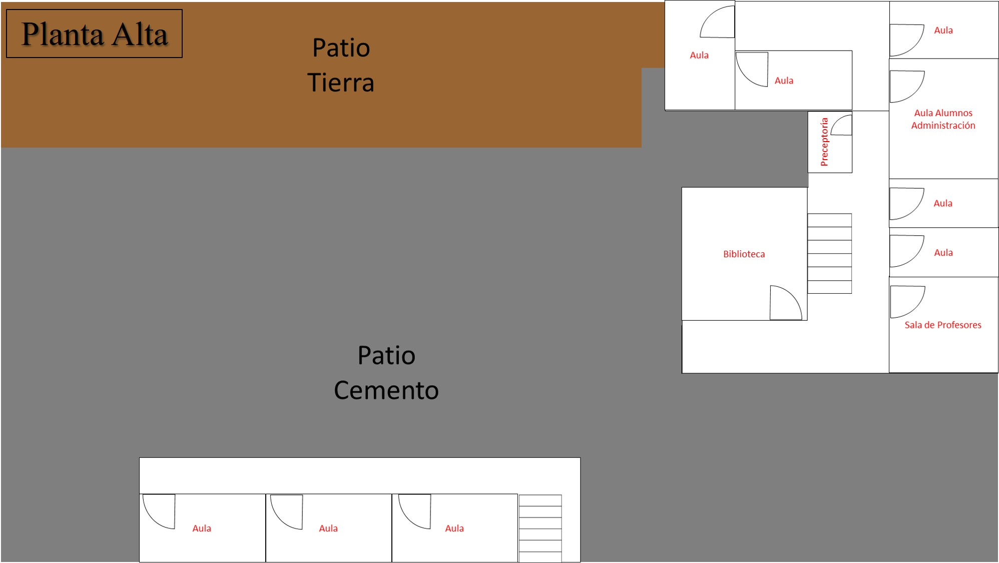
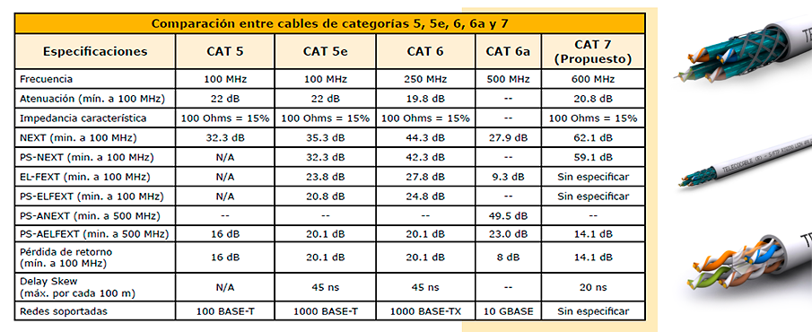
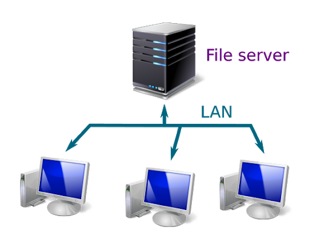

E.E.S.T. nº4
Escuela Secundaria - Ciudad de Garín
Escuela de Educación Secundaria Técnica, conformada con los recursos y el planeamiento de la Ex Escuela de Educación Media N° 5, ( Ex- Nacional de Garín). Pueyrredón, 3150
En el siguiente trabajo, se brindará una propuesta de la aplicación de una red de área local administrada, con el fin de segmentar de una forma óptima un enlace de internet.
La necesidad de administrar una red estructurada nace netamente con el fin de segmentar el abastecimiento de internet que existe entre los diferentes dispositivos dentro de la dependencia del cliente, dependiendo de este, las prioridades y servicios que se le entregará en la red.
El objetivo de la instalación de una red estructurada es, administrar el enlace del proveedor mediante puntos de red físicos en lugares fijos donde la conexión tenga prioridad, logrando conectividad mediante diferentes dispositivos de administración de red ubicados estratégicamente en la escuela abasteciendo puntos de acceso inalámbrico para que profesores y asistentes tengan conectividad en el perímetro perteneciente a la escuela.
Una red estructurada ofrece una mejor segmentación de un enlace, lo que significa que un enlace de internet se dividirá de una forma efectiva tal que todos los dispositivos terminales logren una conectividad de calidad.
Uno de los servicios que le ofrecemos es la conexión en red para una sala de informática, la instalación de esta, se basa en la utilización de un switch Dell Serie-x Networking X1026p que soporta hasta 24 puertos, con una capacidad de conmutación de 52 Gbps. Si usted esta interesados en conectar más dispositivos vía cable ethernet deberá optar por un switch con más puertos, nosotros también ofrecemos el modelo Hp 2530-48g capaz de operar 48 Puertos con un soporte de host IPV4. Para conectar los equipos que usted desee al switch, nuestra empresa trabaja con cables ethernet del tipo SFTP que, a diferencia de otros conectores, este posee un doble blindaje metálico, la lámina que cubre los pares globalmente, como las que separan a cada uno de ellos. Gracias a eso reducen la probabilidad de interferencia en el circuito interno, lo que previene la pérdida de información e impide que los campos electromagnéticos afecten la transferencia de información. Son más usados para conexiones de larga distancia y exteriores. A la hora de la conexión de equipos en la sala de informática, las distancias o ubicación de las computadoras no serán un problema, ya que los cables SFTP necesarios para el trabajo, son ensamblados a medida por nuestros especialistas. El conector de salida de estos es RJ45.
Para conectar a un proveedor de servicios no será suficiente con un switch, este va a trabajar en conjunto con un modem/router que es el encargado de encaminar la señal y que llegue al switch. Este router/modem reemplazara al que originalmente le brinda su proveedor de internet. De este modo podemos realizar una configuración más personalizada.
Una de las desventajas de utilizar el modem que ofrece la operadora es que esos dispositivos cuentan con un modelo anclado en el estándar Wifi N y la banda de 2,4 GHz, con velocidades máximas que suelen rondar entre los 300 Mbps y los 450 Mbps en el mejor de los casos. carecen de tecnologías avanzadas que mejoran, amplían y refuerzan la calidad de la señal, lo que significa que, aunque tengamos contratada una conexión a Internet de alta velocidad, nuestro router no es capaz de aprovecharla.
Utilizando el modem/router que nosotros le ofrecemos disfrutaremos de conectividad Wifi N (2,4 GHz) y Wifi AC (5 GHz) con velocidades combinadas de hasta 1.750 Mbps. El modelo que utilizan nuestros técnicos es TP-Link Archer VR600.
Para que podemos a una alta velocidad en cada máquina, le recomendamos que contrate o actualice su servicio de internet a 100 Mb base. Si conecta 20 equipos, estos trabajaron con 5 Mb aproximadamente por cada computadora.
Además, se va a utilizar una maquina servidor que enlace con la dirección del switch. Esta computadora que realizara el rol de servidor será la que opere el encargado de la sala de informática. Utilizará un software de gestión que verifique el estado de conexión de las demás computadoras. Nosotros podemos ofrecerle micro cyber blue con la instalación bonificada, este programa debe instalarse tanto en las maquinas servidor como en las del cliente.
Otro servicio que se le puede ofrecer, es la conexión de una o más impresoras en red. La ventaja principal de esta, es la posibilidad de usar una misma estación física desde distintos ordenadores, tanto desde un aula como en la dirección. De esta manera, para aquellas personas que cuentan con diversos equipos de trabajo, pero una sola impresora, la opción de conectarla en red les soluciona múltiples problemas. En líneas generales, las impresoras pueden pasar a ser un equipo de red, de manera que se podrá acceder a ella sea cual sea el lugar en el que te encuentres, sin que tengas que preocuparte por tener una impresora por cada uno de tus ordenadores.
El primer aspecto que debemos tener en cuenta es que para que nuestra impresora pueda estar en red tiene que estar conectada a la red. Puede ser por vía inalámbrica (si tuviera la tecnología Wifi), o mediante un cable Ethernet. Cuando montamos una red de cableado estructurado, es muy conveniente que aprovechemos no sólo para conectar ordenadores, sino también los otros dispositivos que vayamos a utilizar: impresoras, escáneres, etc. Si tu impresora tiene tarjeta de red, bastará con que esté encendida y lo suficiente cerca del enrutador para que desde Windows puedas localizarla. En caso de que quieras conectarla mediante cables, el cable de la impresora deberá estar conectado a la misma red.
Luego nuestros especialistas se encargarán de configurar la impresora en red, crear un grupo de trabajo. Y unir a los demás dispositivos a este grupo creado. Para finalmente realizar la configuración final de la impresora por cada dispositivo.
Para expandir la señal Wifi proveniente del modem/router que se encuentra en la sala de informática, le recomendamos la utilización de repetidores de señal, para aquellos sectores donde la intensidad de señal no es buena. La función que cumplen estos dispositivos es ampliar la cobertura Wifi en las aulas, secretarias o aquellos "puntos ciegos". Siendo más específicos, estos repiten la misma señal wifi que ya emite el router conectado, para que llegue más lejos. Por un punto de acceso capta la wifi existente, mientras que por un segundo punto de acceso esa señal captada es emitida de nuevo, pero a mayor potencia.
Los repetidores Wifi no requieren de ningún cable, tampoco hace falta hacer agujeros ni instalar nada, se conectan directamente a un enchufe de corriente libre y listo, luego todo se configura de manera inalámbrica y sin cables, la mayoría de ellos se pueden configurar desde el móvil.
Los tipos de repetidores que utiliza nuestra empresa son:
Para la instalación en el colegio, le recomendamos utilizar malla básico, de esta forma se cubriría todo el establecimiento y se podría navegar a una velocidad estable. Repetidor wifi en malla: Este es el repetidor wifi más avanzado, se compone de dos o más dispositivos, lo que hace es crear una malla wifi repartida por toda la escuela, es la forma de obtener mayor cobertura y mejor estabilidad de señal. Ya que la wifi creada es uniforme en toda la escuela, además al cambiar del router al repetidor no se produce corte de conexión.
Tenga en cuenta que mientras más dispositivos conecte a la red, deberá aumentar los Mb que le ofrece su proveedor de Internet.
Para que los docentes, secretarios o directivos puedan organizar sus contenidos o transferir archivos entre dispositivos, se le recomienda generar un FileServer. Este, es un servidor central de una red de ordenadores, que pone a disposición del cliente conectado un conjunto de archivos o parte del mismo. De este modo, el servidor de archivos proporciona a los usuarios un lugar de almacenamiento centralizado para los archivos en sus propios soportes de datos, disponible para todos los clientes autorizados. Para más seguridad los usuarios que quieran ingresar a este servidor de archivos, deberán ingresar un usuario y contraseña generados previamente por nuestro administrador de red, este determinara quienes tiene derecho de acceso.
Para realizar esta conexión se va precisar de un hardware adecuado. En primer lugar, se debe proporcionar suficiente espacio de disco duro para almacenar los archivos y programas deseados incluidos el sistema operativo y el software necesarios para el uso del cliente. Además, el servidor necesita suficiente memoria y capacidad de procesador para gestionar el acceso a los archivos y programas por parte de los diferentes usuarios de forma rápida y sin errores.
Nosotros podemos ofrecerle el Servidor Poweredge Dell T40 Xeon E3-2224 16gb 1tb. La función de este FileServer es almacenar documentos y no archivo multimedia. Con una capacidad de 1 TB sería suficiente.
Una de las ventajas principales es de los servidores de archivos es la copia de seguridad de archivos. A diferencia del almacenamiento y la gestión conjunta de archivos relevantes, este aspecto se centra en la creación y el almacenamiento de copias de seguridad clásicas, en función de las necesidades de los archivos del sistema, del usuario o de ambos. Almacenar estas copias de forma externa en un file server es una opción tan simple como económica, que nos permite planificar y cubrir las necesidades de almacenamiento adicionales de cada cliente.
Otra gran ventaja del uso de los servidores de archivos es el aligeramiento de los recursos del cliente: aparte de los documentos personales, todos los archivos empresariales y copias de seguridad se pueden guardar en el FileServer, dependiendo del modo en que la empresa quiera gestionar su almacenamiento. Además, si se establece un sistema de organización adecuado, con una buena distribución en directorios, carpetas, etc., resulta mucho más fácil mantener a la vista el conjunto de archivos.
| Componentes | Modelo | Precio | Cantidad requerida | Utilidad | Marca |
|---|---|---|---|---|---|
| Módem / Router | TP-Link Archer VR600 | $10.000 | 1 | Recibir y emitir internet | MARV |
| Cable Ethernet | SFTP | $530 x metro | 40mts | Conexion | MARV |
| Switch X24 Puertos | Networking X1026P | $56.000 | 1 | Conector de Puertos | Dell |
| Repetidor Wifi | Access Point, Router, Tp-link Deco E4 | $8.400 X/cada 2 dispositivos | 3 | Expanción de señal | TP-Link |
| Servidor | Poweredge Dell T40 | $125.000 | 1 | Administrador | Dell |
| Mano de obra instalación de redes | - | $145.000 | - | Instalación de servicio | - |
| Configuración de equipos | - | $8.000 | - | Impresoras y demas dispositivos | - |
| FileServer | - | $15.000 | - | Servidor de carpetas | - |
| TOTAL | - | $405.400 | - | - | - |
Las conexiones, ofrecen una mejor calidad para efectuar actividades tecnológicas, ya sea con internet o sin éste, ya que la conexión local genera comunicación entre todos los dispositivos conectados.
Además de conectividad física, se instalan también puntos de acceso inalámbrico, los cuales ofrecen a los trabajadores de la educación poder conectarse sin la necesidad de usar cable.
El área administrativa de la escuela ahora presenta menos problemas en la conectividad para poder comunicarse con las entidades educacionales gubernamentales, ya que cada una de las oficinas pertenecientes a esta área cuentan con puntos de acceso físico para cada uno de sus computadores, lo que hace una conexión estable y de calidad.
El internet e intranet, hoy en día, son herramientas primordiales que entregan un recurso instantáneo a todas las personas, es importante generar cultura sobre cuáles son los beneficios que se entregan y ofrecer a las próximas generaciones un sistema en donde se puede enseñar y aprender.